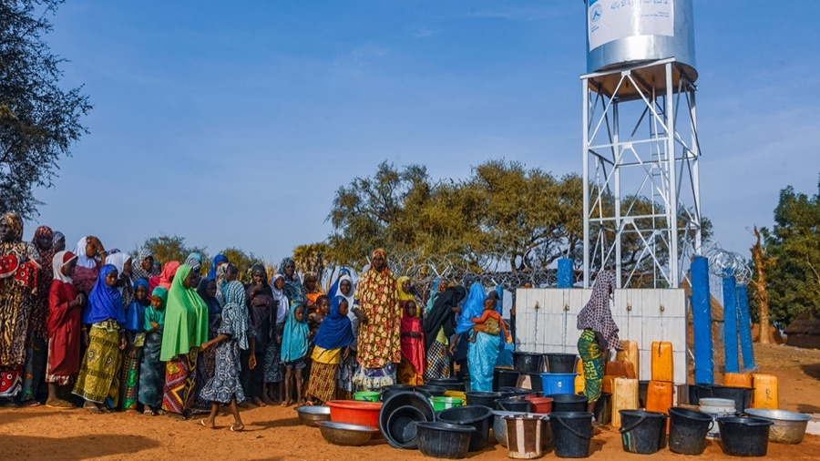
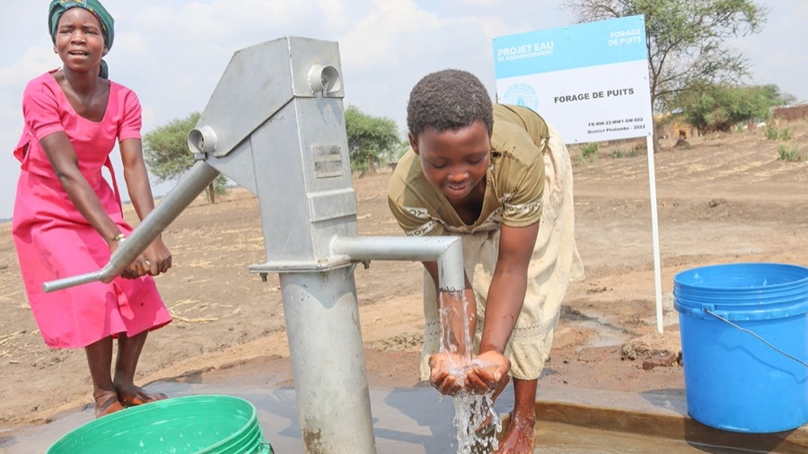
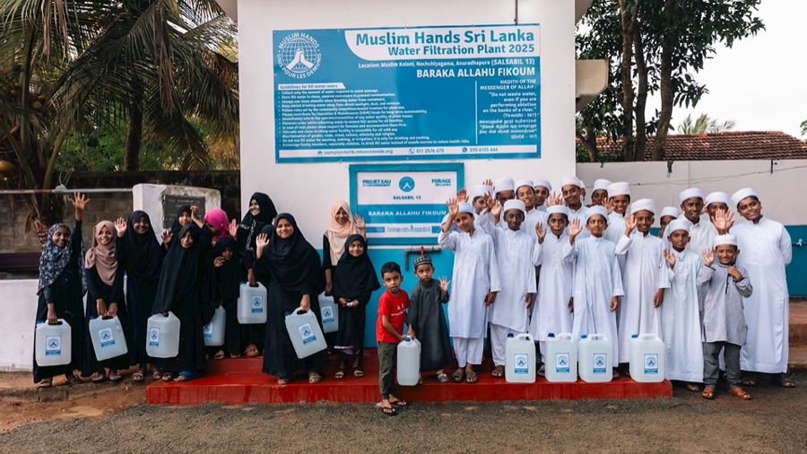
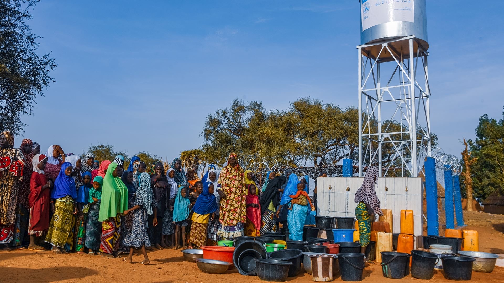

- Plaque à votre nom, photos et coordonnées GPS à l'inauguration
- Entretien assuré par un comité villageois formé
- 900 € vous coûtent 306 € après réduction d'impôt
Du point d'eau familial au forage de village
Le prix dépend du pays, de la profondeur de la nappe et du type d'ouvrage. Chaque solution a sa fiche, avec le détail de ce que finance votre don.

Pompe à eau
350 € soit 119 € après impôt
Offrir une pompe
Puits de village
900 € soit 306 € après impôt
Creuser un puits
Puits avec arbres fruitiers
1 200 € soit 408 € après impôt
Offrir ce puits
Puits communautaire
2 500 € soit 850 € après impôt
Offrir ce puits
Forage solaire
4 500 € soit 1 530 € après impôt
Financer un forage
Fonds pour l'eau
Libre
Donner au fondsUn puits au nom d'un proche décédé
« Lorsque l'homme meurt, ses œuvres s'arrêtent, sauf trois : une aumône continue, une science utile, un enfant pieux qui invoque pour lui. » Le puits est l'aumône continue la plus demandée pour un parent disparu : chaque gorgée bue lui est comptée.
Lors du don, indiquez le nom à graver sur la plaque (30 caractères, en français ou en arabe). Vous pouvez le modifier pendant deux semaines. À l'inauguration, vous recevez les photos de l'ouvrage, de la plaque et les coordonnées GPS, à partager avec votre famille.
Offrir un puits au nom d'un défunt

L'eau arrive, l'école reprend.
Sans corvée d'eau, les filles retournent en classe : c'est le premier effet d'un puits, avant même la santé.
Où nous construisons
Au Sahel (Mali, Niger, Sénégal, Gambie, Mauritanie), en Afrique de l'Est (Somalie, Malawi) et en Asie du Sud (Pakistan, Bangladesh, Sri Lanka), ainsi que dans les camps de déplacés du Yémen et du Liban. Nous choisissons les sites avec les communautés, selon notre charte eau et assainissement : près d'une école ou d'un dispensaire, là où aucun point d'eau n'existe à moins de deux kilomètres.
Mon puits
900 € vous coûtent 306 € après réduction d'impôt de 66 %.
Creuser un puitsPaiement en 1, 3 ou 10 fois · reçu fiscal immédiat · plaque et GPS
Le suivi de votre puits, étape par étape
Étude et choix du site
Avec la communauté, selon la charte eau et assainissement. Analyse de l'eau avant travaux.
Construction
Par des entreprises locales, 9 à 12 mois selon la saison des pluies.
Inauguration
Photos, plaque à votre nom, coordonnées GPS envoyées par e-mail.
Entretien
Un comité villageois formé assure la maintenance ; nos équipes repassent chaque année.
Pourquoi les prix varient selon les pays
Au Bangladesh, la nappe est à dix mètres et une pompe manuelle suffit. Au Mali, il faut creuser trente mètres et maçonner. Au Yémen ou en Somalie, seul un forage profond avec pompe solaire atteint l'eau, et le transport du matériel coûte cher. Nos prix suivent ces réalités, sans marge : c'est pourquoi un puits de village coûte 900 € et un forage 4 500 €.

Questions fréquentes sur les puits
Combien coûte un puits ?
De 350 € pour une pompe manuelle à 900 € pour un puits de village et 4 500 € pour un forage solaire. Le prix dépend du pays, de la profondeur de la nappe et du type d'ouvrage.
Puis-je offrir un puits au nom d'un défunt ?
Oui. La plaque porte le nom que vous choisissez (30 caractères, français ou arabe).
Quel délai de construction ?
De 3 à 6 mois pour une pompe, 9 à 12 mois pour un puits ou un forage. Photos et coordonnées GPS à l'inauguration.
Qui entretient le puits ?
Un comité villageois formé par nos équipes ; nous repassons chaque année et finançons les réparations via le fonds pour l'eau.
Puis-je financer un puits à plusieurs ?
Oui, en créant une cagnotte solidaire entre amis, collègues ou membres d'une mosquée : chaque participant reçoit son reçu fiscal.
Le puits est-il éligible à la zakat ?
Un puits est d'abord une sadaqa jariya. Il peut être financé par la zakat lorsqu'il dessert uniquement des populations démunies : cochez la case « Zakat » lors du don et notre équipe vérifie l'affectation avec vous. Pour une zakat sans condition, choisissez le fonds Zakat al Maal.